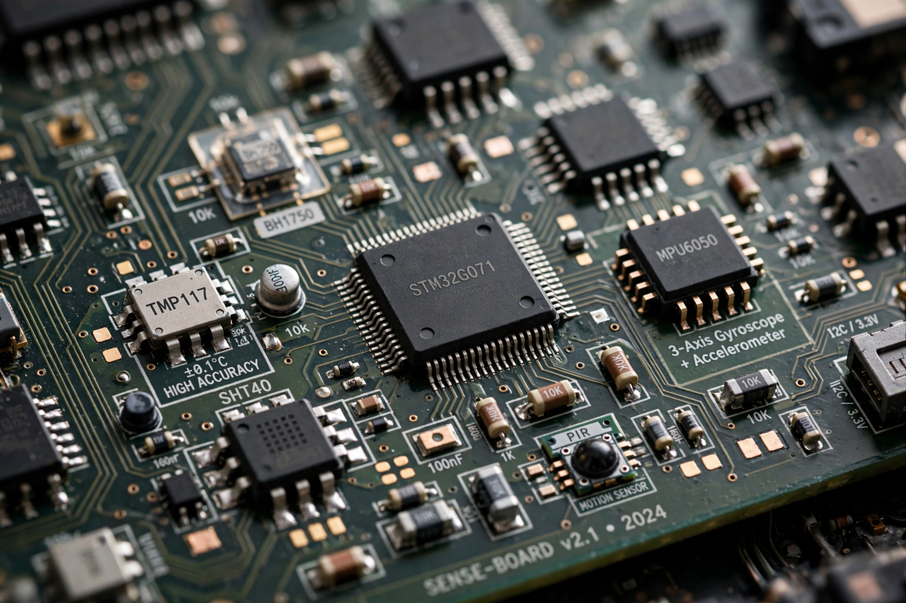

A sensor is a device, module or subsystem that detects events or changes in its environment — such as temperature, pressure, light, motion or chemical composition — and converts them into a signal, usually electrical, that can be measured, recorded or used for control.

Sensors are described by sensitivity, range, resolution, accuracy, precision, linearity, response time, drift and calibration. A transducer converts one form of energy to another; sensors are transducers whose input is a physical quantity of interest.
Common types include thermal sensors (thermistors, RTDs, infrared), pressure sensors, proximity and position sensors, optical sensors and image sensors (CMOS/CCD), gas and chemical sensors, biosensors, and inertial sensors (accelerometers and gyroscopes) used in phones, vehicles and aircraft.
Sensors underpin industrial automation, medical monitoring, environmental and weather observation, consumer electronics, automobiles and the Internet of Things, where networked sensor data feeds analytics and feedback control.